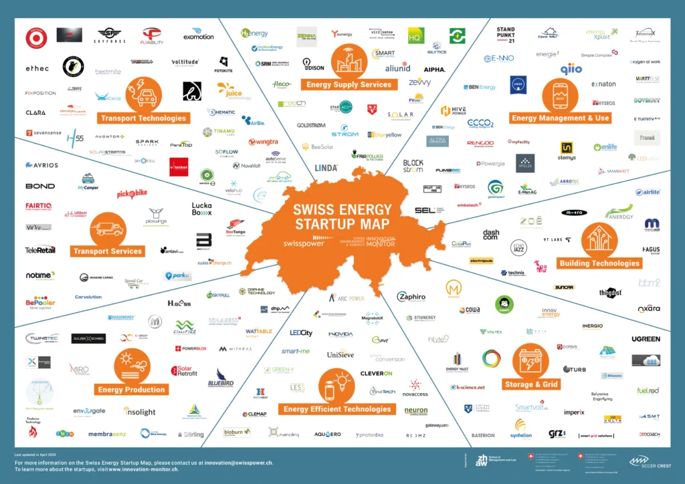

May 13, 2020
qiio in the 2020 Swiss Energy Startup Map
The 2020 Swiss Energy Startup Map, powered by the ZHAW Institute of Innovation & Entrepreneurship and Swisspower, shows how innovative the Swiss energy sector is by highlighting 250 active Swiss Energy startups.

qiio is honored to be one of the 250 Swiss Energy Startups to be listed in
the “Energy Management & Use” category. Companies in this category provide software or services to
facilitate the efficient management and use of energy (both electricity and heat) at the household, regional
or industrial scales. This includes supporting well-integrated renewable energy sources, as well as the
installation, planning, financing, billing, and monitoring of self production-consumption (prosumption)
systems. Additionally, this considers efficient end consumers behavior and smart home technologies.
Take a look at the map and discover more active Swiss energy startups:
https://www.innovation-monitor.ch/news/article/energy-startup-map-2020